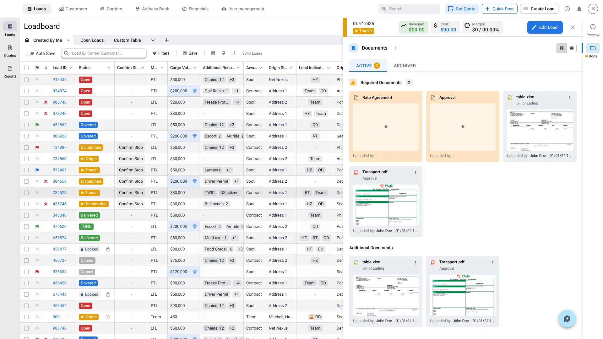
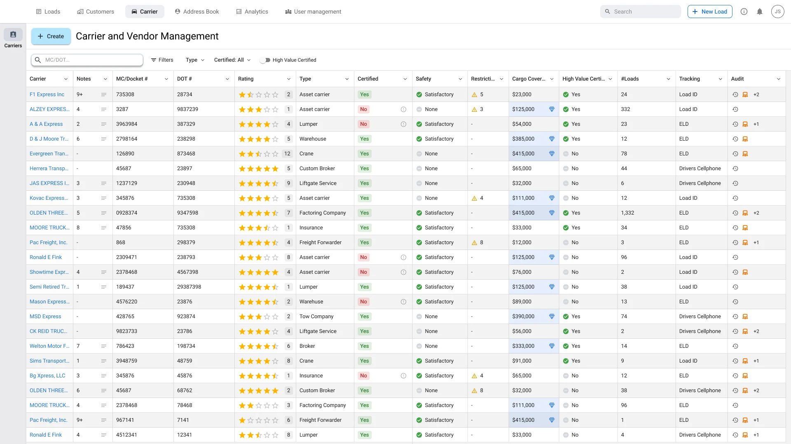
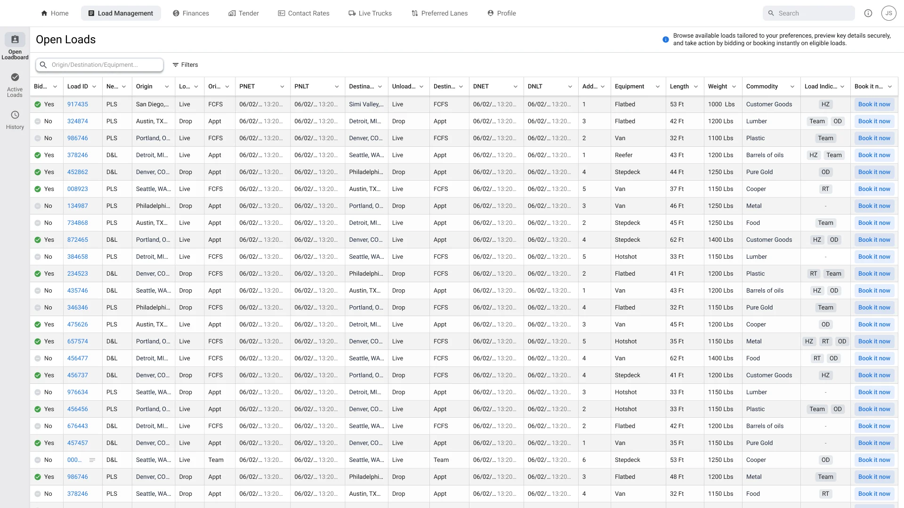
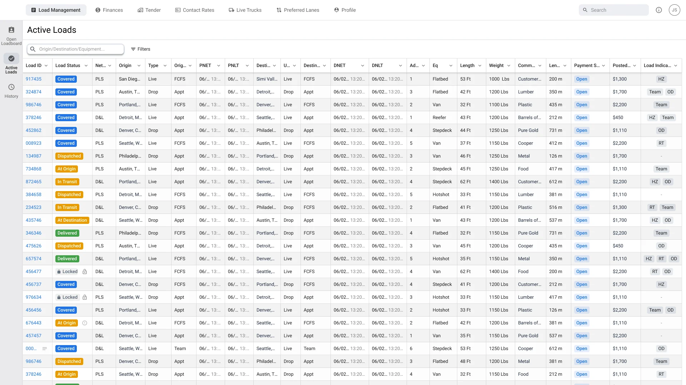
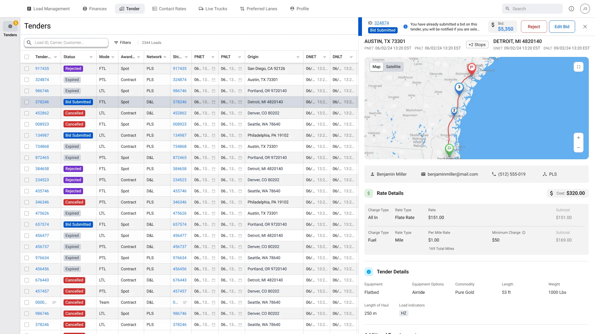
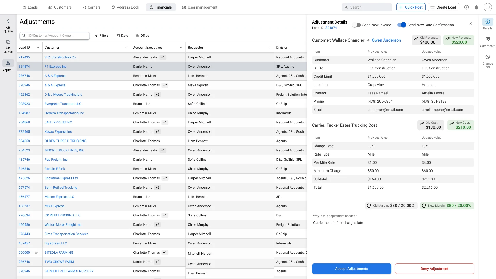
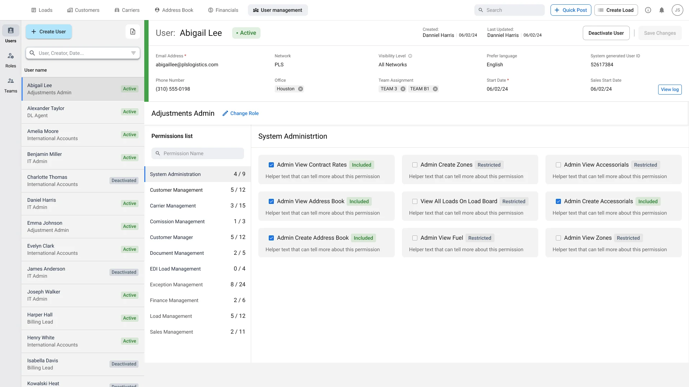

Logistics · UX/UI Design
Transportation Management Platform
Making complex freight operations easier to navigate. I designed the structures and interactions that help people scan loads, inspect a shipment and manage the records behind it, across connected modules of a transportation management platform.
- Client
- Confidential (NDA)
- Role
- UX/UI Product Designer
- Platform
- Web · responsive mobile
- Period
- Jun 2024 — Apr 2025
- Domain
- Logistics

Overview
Making complex freight operations easier to navigate
I was the UX/UI product designer on a transportation management platform that brings together freight loads, customer and carrier records, and admin workflows. I turned requirements into interface structures, prototypes and consistent interactions across connected modules.
The project is covered by an NDA, so the case shows selected design problems without naming the client or revealing confidential data. The examples focus on the desktop workspace; a responsive mobile interface for field operations was part of the project too.
The challenge
One set of data, many ways of working
A user may scan a list of loads, spot an exception, inspect a shipment, update a record or check the customer and carrier behind it. Each task needs a different level of detail. Three questions guided the design:
- 01
What should users see when reviewing many records?
- 02
Which information belongs in the view of a single load?
- 03
How can the workspace adapt to different needs without becoming inconsistent?
Process
Structure first, details later
I started with what shapes the rest of the platform: navigation, system controls, information hierarchy and status visualisation.
- 01
Structures
Navigation, controls, hierarchy and status visualisation defined before screens.
- 02
Validate
User surveys and low-fidelity prototypes tested the key workflows.
- 03
Test
An interactive high-fidelity prototype went to user testing; the findings shaped the release.
01 — Loadboard
Dense on purpose, manageable by design
The Loadboard is the central module for reviewing and managing freight loads. People compare many records without opening each one, so the density is deliberate. Structure, filters and customisation make it manageable.
- 01
Views users define
Choose and order columns, pin key fields, set a default view. Fields are grouped and searchable.
- 02
Hierarchy in dense rows
Alignment, typography, labels and compact markers separate identifiers, statuses, places and dates; status and priority carry more weight.
- 03
Selection and action
Selecting rows opens an action context in the table. States, menus, editable cells and dialogs form one interaction model.


02 — Status and risk
Progress and urgency are different signals
Status labels show where a load is. Priority markers, flags and risk indicators show what needs attention.
Risk combines colour with labels, icons and context, so the meaning does not depend on colour alone. The same signals repeat across rows, details and related components.

03 — Load details
From comparison to investigation
The Loadboard is for scanning; the preview is for looking into one shipment, from a compact overview to operational detail. A route map gives a spatial view and the stop sequence a timeline of the same journey. An explicit edit action separates reviewing a record from changing it.
- 01
Status and financial summary
- 02
Route and tracking
- 03
Shipment requirements
- 04
Carrier information
- 05
Notes and documents
- 06
Sequence of stops



04 — Customer profiles
A relationship that grows over time
Contacts, billing, preferences, credit limits and account ownership live in one profile. Sales teams start with a small set of data and complete it as the relationship develops, so an early start does not need every account detail.

05 — Carrier profiles
A clear hierarchy instead of one long form
Compliance, billing and relationship details are split into meaningful areas. That gives consistent access to carrier data across brokerage workflows and a reusable structure for carrier records.


06 — Beyond the Loadboard
The work around a load
Load management lists give a filtered view of open and active loads with status, equipment and rates. The tender area collects the requests that need action, and the bid view puts rate details next to the actions to book or bid. An adjustments screen brings the financial side of a load into the same system.





07 — User management
Access and responsibility, made readable
Users, roles and permissions get a dedicated area. Structured role definitions and activity information give context for administrative decisions. The work is about the clarity of these interactions; enforcing security belongs to the underlying system.



08 — Design system
One set of patterns for every module
Forms, tables, menus, dialogs, navigation and status information share patterns, with variants, variable-based styling and theme support. Familiar controls make the modules feel like one product, so design effort goes to the domain questions: which information matters, how to group it and what action follows.
Reflection
Density versus clarity
Showing less was not always the answer: in some workflows people need to compare many records at once. So the design relies on configurable views, consistent signals and a clear step from overview to detail.
The project shaped my approach to enterprise products: understand the operational context, set reusable interaction rules and let the structure of the workspace support different tasks.
What I designed
A consistent desktop workspace for freight operations: a configurable Loadboard, a detailed load preview, customer, carrier and user-management modules, and a shared component library that connects them.
More cases